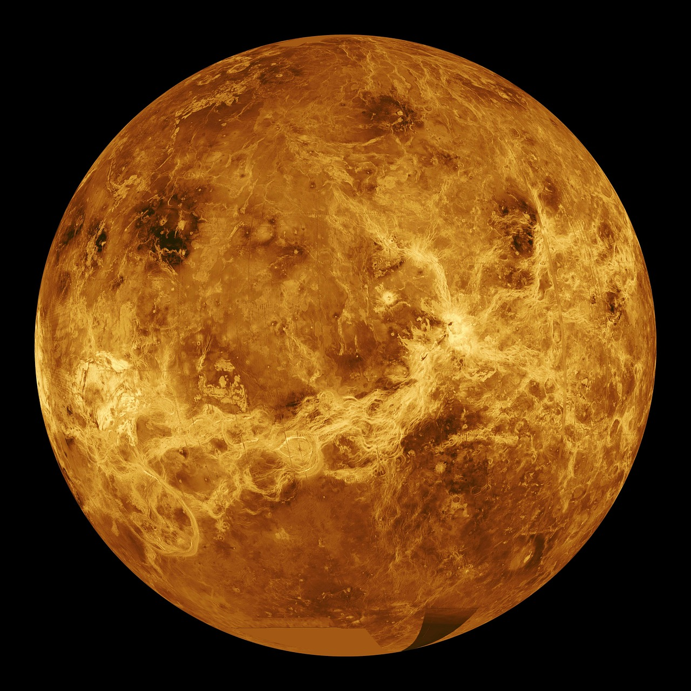

Venus

- The only planet in solar system that rotates counterclockwisely.
- This planet is filled with its dense air, mostly composed of carbon dioxide.
The air pressure is said to be 90 times of that of the Earth.
The dense air layer also stricktly covers the surface of Venus that it is hard to observe the surface of Venus.
- It is said to be the hottest planet in solar system with about 400 degree celcius on the surface.
This is due to its dense air blocking heat to leave the planet so called the greenhouse effect.
Back
Home
Next